Eski Turan (Dimitre)
Bugünkü adı ile Turan, eski adı ile Dimitre.
Bugün Turan diye bilinen köyün hemen kuzeyinde yer alan vadinin içerisinde bulunan bu eski yerleşim yerini inceledik.
1960’lı yıllarda heyelan riskinden ötürü köy bugünkü konumuna taşınmış ve vadi içerisindeki kadim yerleşke kaderine terkedilmiş.
Yaşanmışlık izleri ile bezeli yıkık evler, birbirine bağlanan, kilit taşlı kapılı yer altı şehirleri, kaya kiliseleri ile bu vadi bir kültür hazinesi.
Taş kaldırım yolları, kağnı tekerlerinin aşındırması ile raya dönüşmüş yollar, bağlar, eski camii ve daha nicesi bu kadim yerleşkede ziyaretçilerini bekliyor.
Bizim keşfimizde 3 tane büyük yer altı şehri bulduk, bununla birlikte çok sayıda oyma kaya mezar, kilise türü yapılara rastladık.
Özellikle ilkbahar ve sonbaharda ailecek gezilebilecek çok güzel bir yer burası.
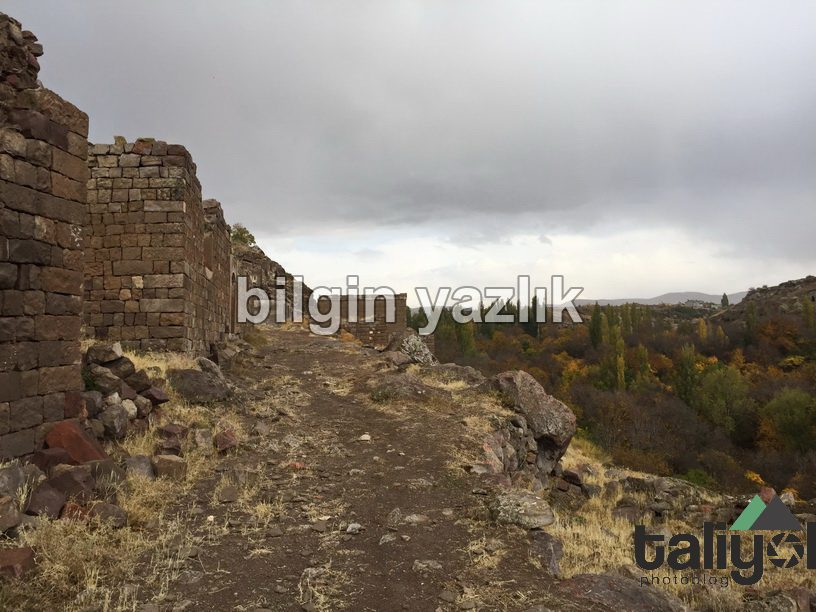
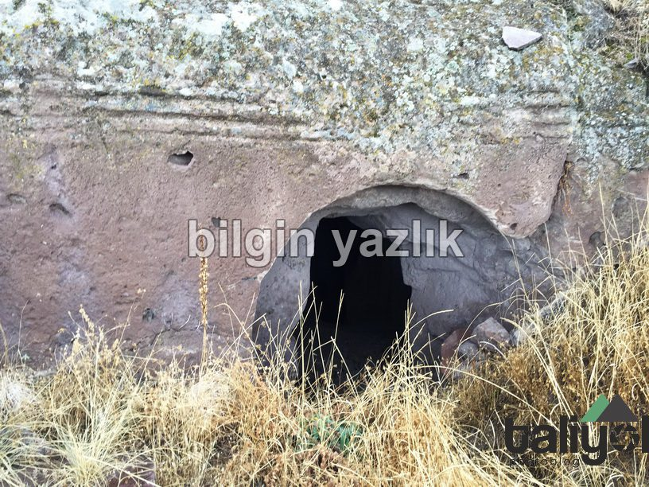
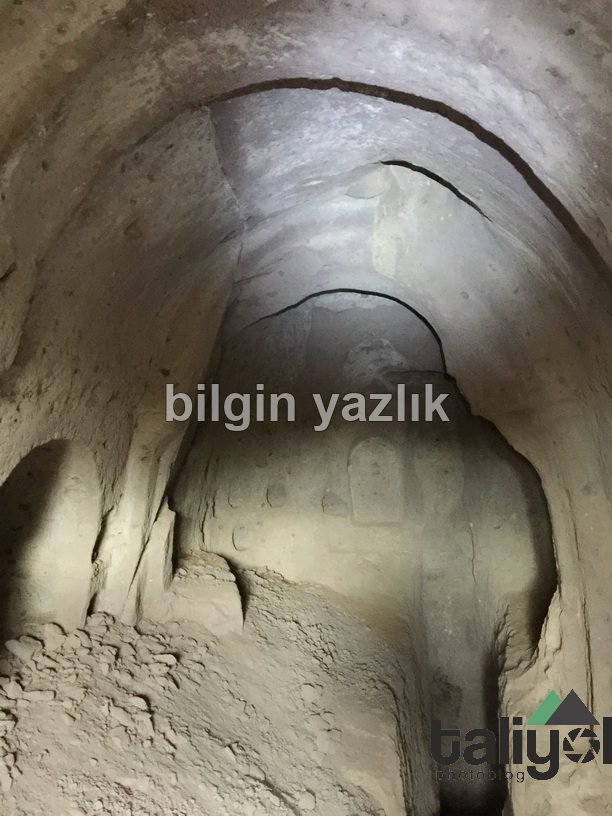
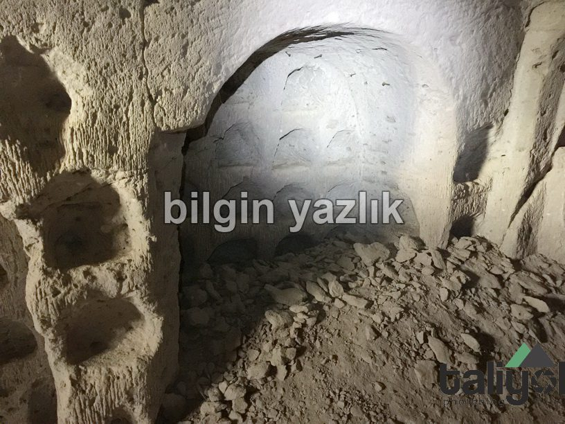
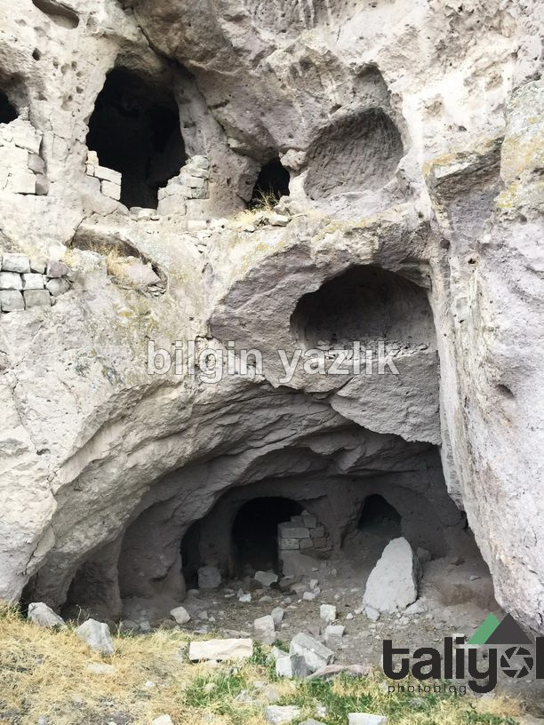
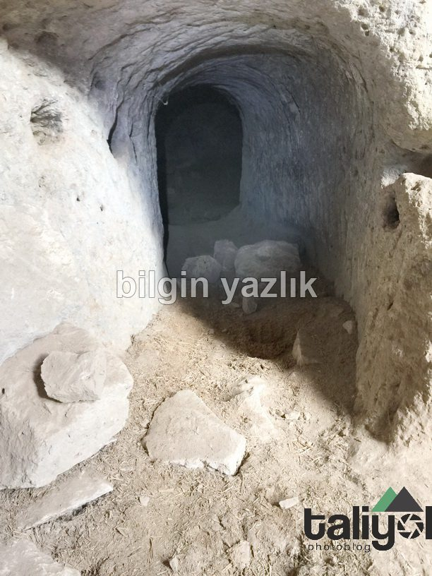
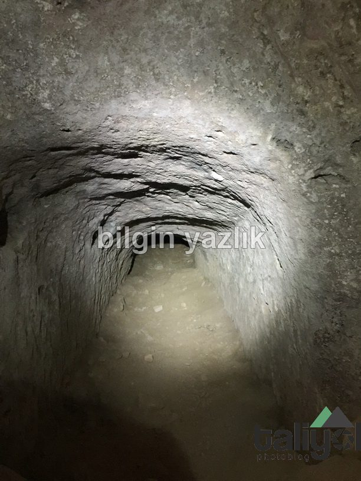
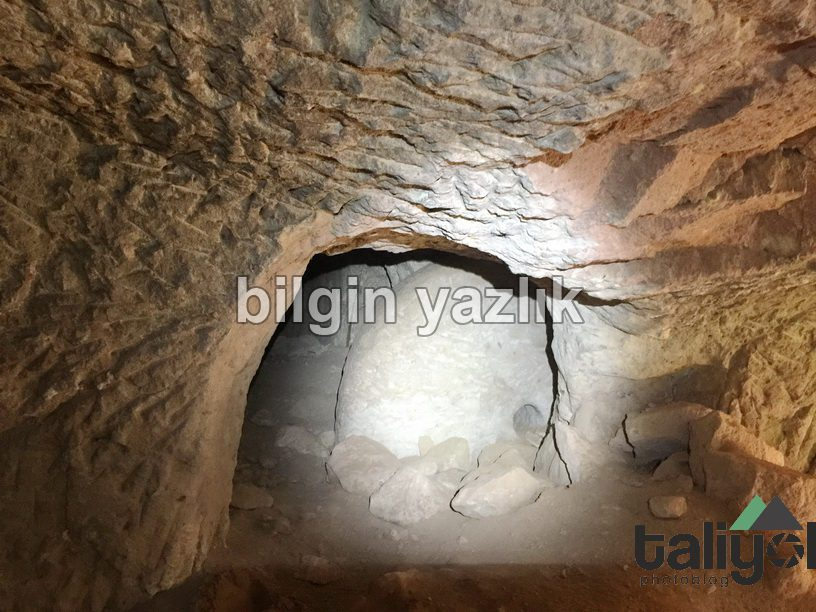
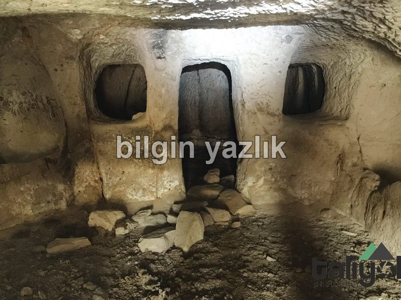
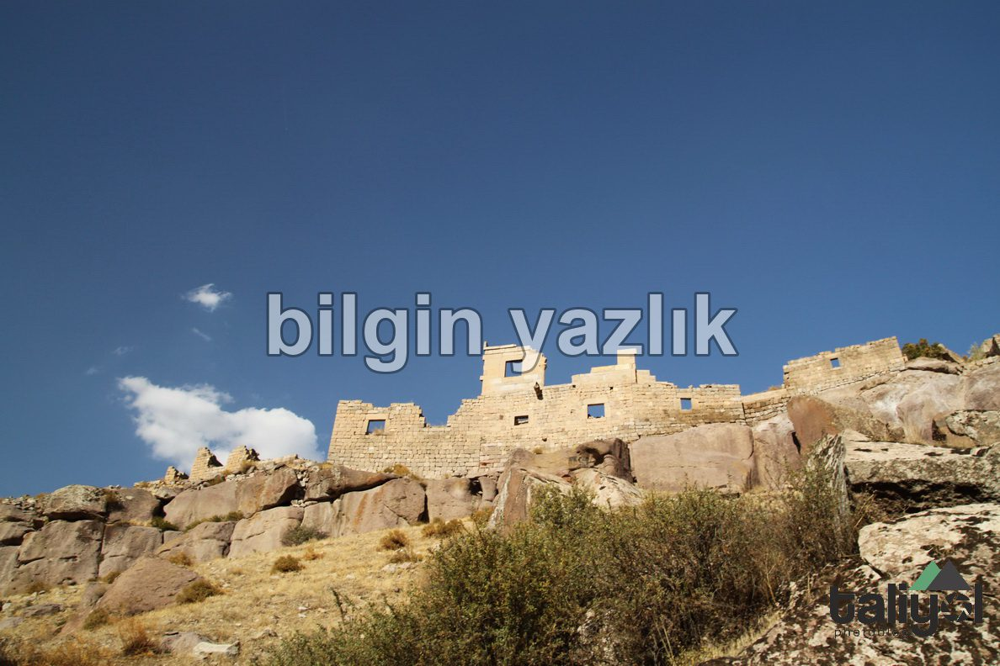
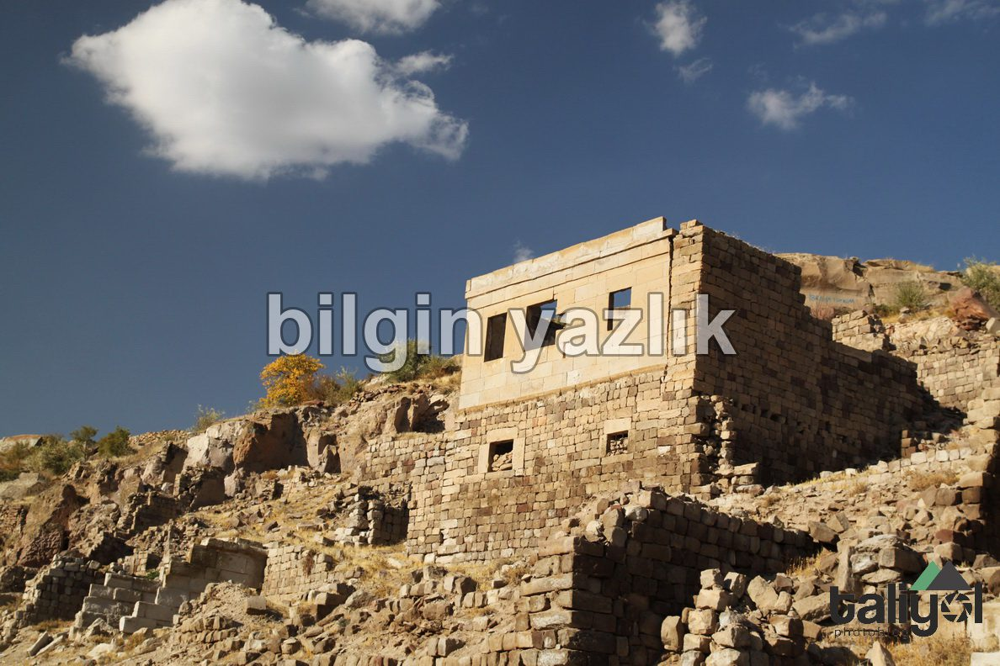
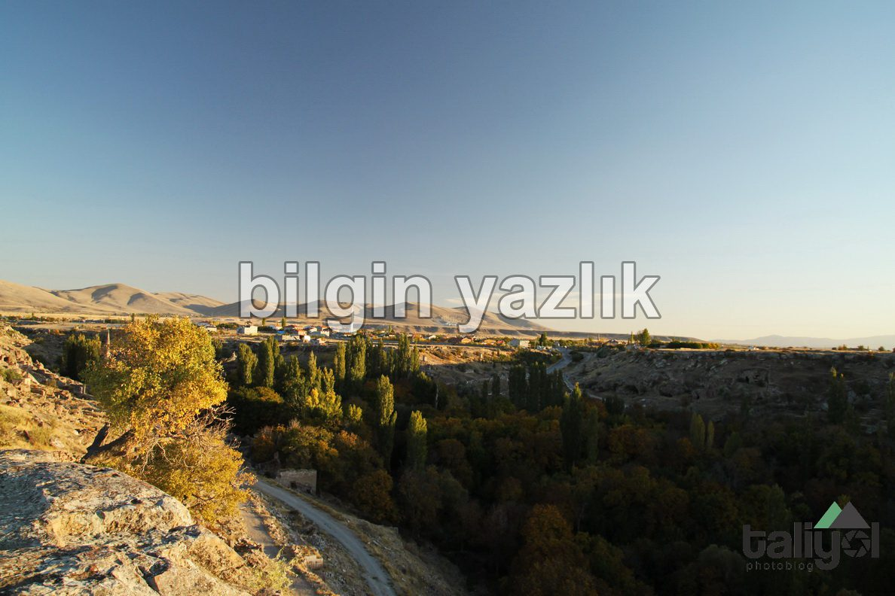
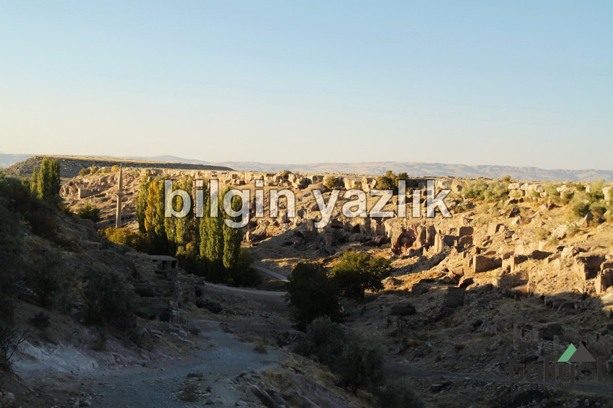
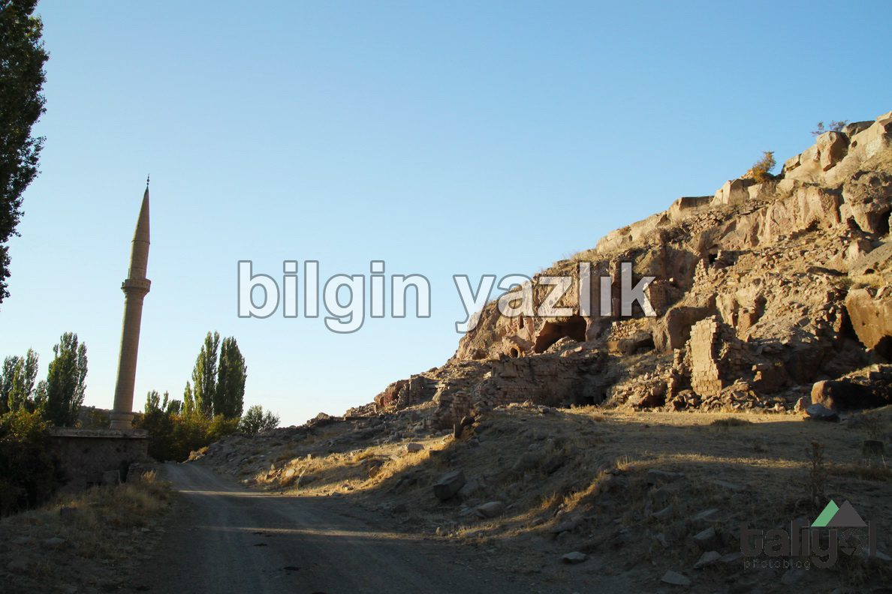
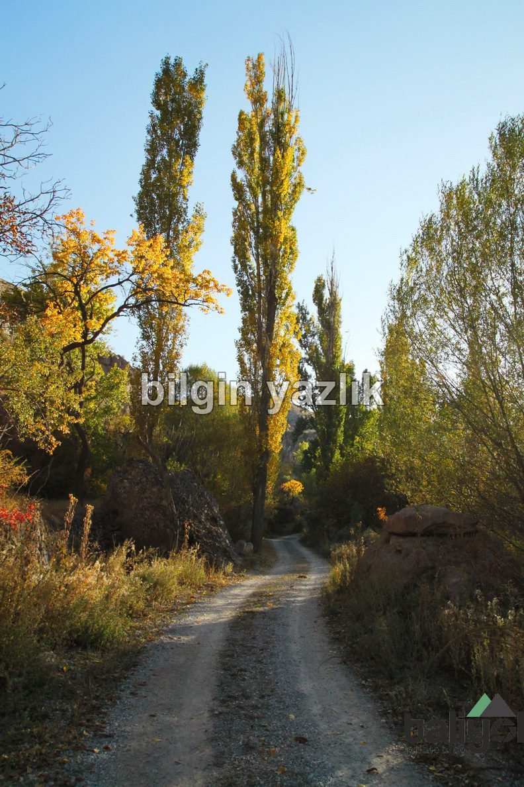
Bu yazı taliyol arşivinden taşınmıştır. · özgün kayıt